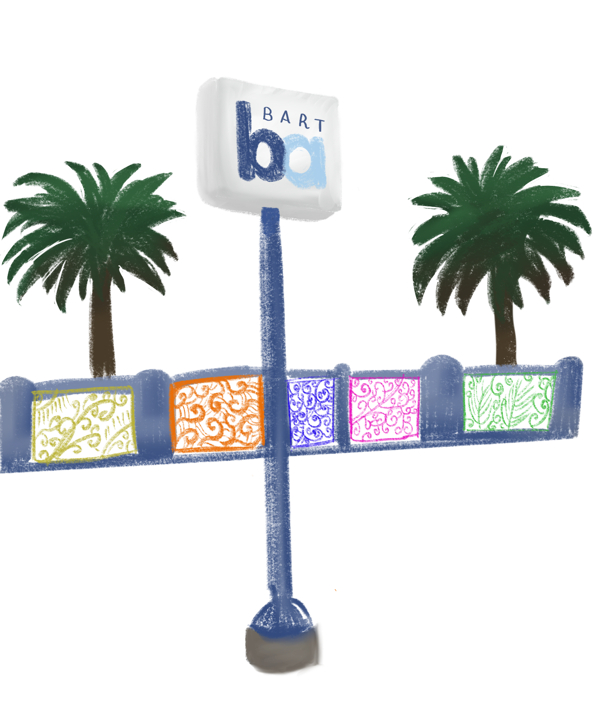
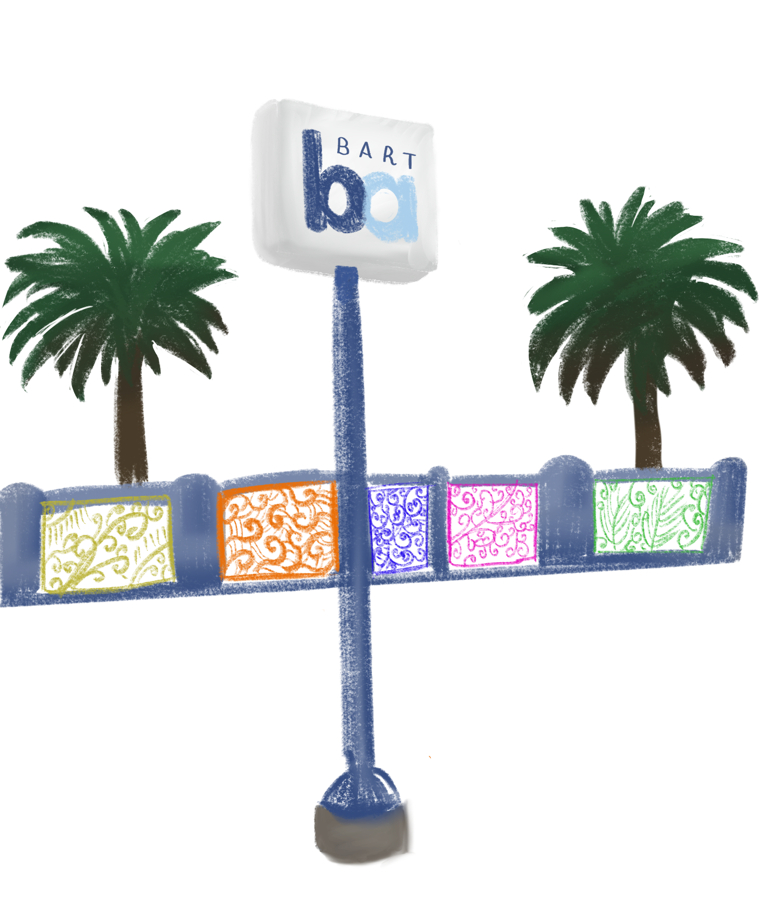
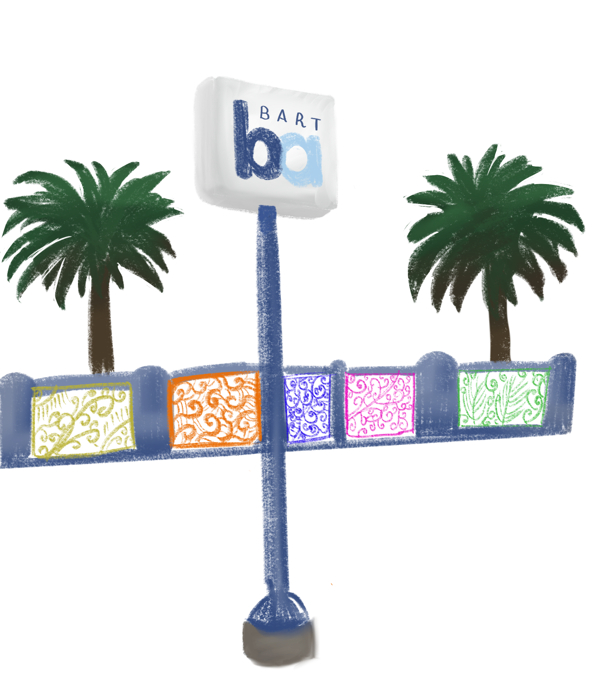
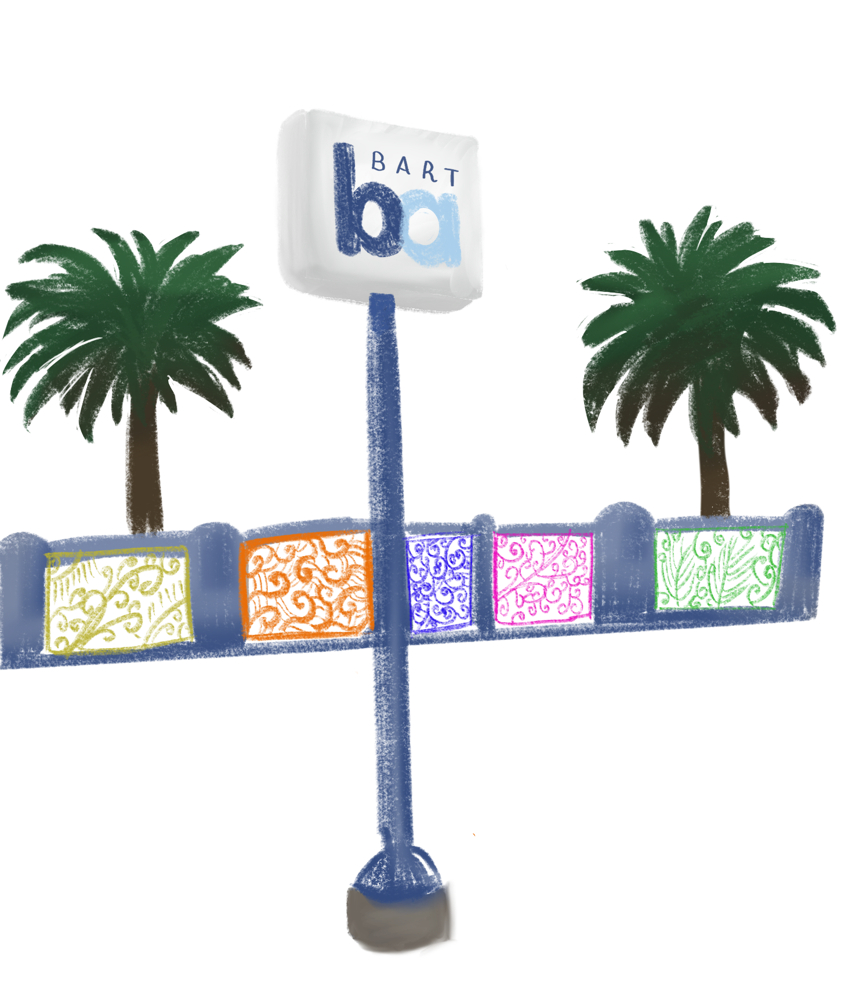

Designation of the first American Indian Cultural District (AICD) in the United States to recognize and honor the Indigenous community of San Francisco
 



As students, we acknowledge that the Northwestern University, San Francisco campus is located on the unceded ancestral homeland of the Ramaytush Ohlone peoples who are the original inhabitants of the San Francisco Peninsula. Before ‘California’ was part of the United States, Mexico, or Spain, the City and County of San Francisco was inhabited by the Yelamu people, a tribe of the Ramaytush Ohlone peoples. As students, we also recognize the importance of questioning the accuracy and completeness of the history taught through academia, primarily viewed through a Western lens. Native peoples continue to reside here as artists, community organizers, educators, engineers, doctors, scholars and much more. We, as students, wish to support the initiatives for visibility encompassing placemaking and placekeeping that the community leads. We also encourage others to do the same while thinking critically about their role for partaking in these efforts.
Ramaytush Ohlone Land — In the hilly streets of San Francisco, street signs serve not only as points of navigation but also as an entryway into a new culture. From the painted crosswalks of Little Italy to the large bustling Dragon Gate of Chinatown, these signs and public displays of art explore the rich tapestry of the city. These markers serve as a sign of visibility for a community.
For the original stewards of the San Francisco peninsula, the Ohlone people, home extends beyond a drive for establishing a cultural district.
The Indigenize SF Project is one of the American Indian Cultural District's (AICD’s) initiatives centered on confronting systematic erasure and expanding the rich cultural heritage of San Francisco.
Established in 2020, the AICD has been working to increase public awareness and visibility of local Native American culture and history. In an effort to provide health services to the often unacknowledged Indigenous individuals in San Francisco, the AICD partnered with sister American Indian health organizations in 2021 to establish a Commission Resolution to emphasize the health disparities in the local Indigenous community. They have also partnered with several other organizations such as the Planning Department to ensure that Indigenous housing needs were met in the 2022 Housing Element Plan. Through partnerships and activism, the AICD has proven its commitment to the visibility of American Indigenous culture in San Francisco.
They organize their advocacy into four major areas of focus: Murals, Flagpole banners, Digital walking tours, and Street Signs.
Specifically, they are working with local Indigenous artists, creating artistic murals throughout San Francisco to respect California Indians and the diverse Indigenous communities of the SF Bay Area. Highlights include some murals located within both Golden Gate Park and the Cultural District that commemorate Indigenous stewardship and community diversity.
Additionally, they are collaborating with California and Bay Area American Indian artists to create flagpole banners that respect cultural heritage. These banners, the Cultural District Logo, and other artworks work to advance Indigenous existence and stories in public places.
Relatedly, partnering with SF Heritage and sister organizations, the AICD has implemented digital walking tours to document culturally and historically notable sites for the American Indian community. By way of oral storytelling and digital platforms like QR codes and Google Maps, they put forth obtainable and immersive educational experiences for visitors to learn about Indigenous lifestyles and history in San Francisco.
Lastly, the fourth focus area consists of Mapping Genocide. This initiative works to research and address placenames, streets, memorials, and parks in San Francisco that honor those connected to the genocide of American Indians. By bringing truth to historical practices and working within a communal-based process, the AICD incorporates culturally significant artworks and placenames.
Over 35 streets, including Lyon Street, Mason St., Hallek, Hastings and others have been found to be named after these individuals throughout the City.
Mason St. and Fort Mason are both named after Colonel Richard Barnes Mason who participated in the Gold Rush from the 1800s. Colonel Mason worked closely with John Sutter, who was responsible for bringing Native American women into Fort Mason for prostitution.
“If you have ever been to the Civic Center … there was a statue there that we had one part removed because of its very offensive message that it was showing and that dealt with a Native American that was on his knees to a white General. People found that to be very offensive and not what we believe is social and racial equity,” Diane Matsuda, President of the Historic Preservation Commission under SF Planning, said.
In addition to street signs, statues, monuments, and other public spaces including the name of Mission Dolores Park itself misrepresent the history of the land.
The AICD is now formally recognized on unceded Ramaytush Ohlone land, which extends beyond what is known as the Mission District today.
“I didn't know that was a thing… I didn't know [the American Indian Cultural District] existed,” Jessica Oledan, a student at City College of San Francisco, said.
An original Yelamu Ohlone Village Site, named Chutchui, is now more widely known as Mission Dolores Park.

Oledan, who recently moved into the Mission District, said she likes to come to the Park because of proximity.
She wishes there were more initiatives to spread awareness on Native people and their homelands.
Indigenous culture has been stripped of significance for years leaving these communities void of its culture. The introduction of the AICD has created a community of individuals who aim to bring the attention that the community deserves. Drawing on the history, culture and tenacity of the Indigenous community, both past and present, the organization hopes to inform the wider San Francisco population.